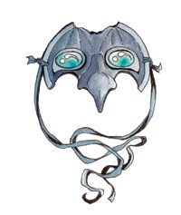

维伦 Vhaeraun（阴谋之神）
（左一）
黑暗精灵神系 弱等神力
别称：蒙面君王 The Masked Lord，夜下蒙面神 the Masked God of Night
圣徽：眼睛处镶着一对透镜的面具

居住界域：深坑魔网 Demonweb Pits
阵营：混乱邪恶 CE
神职：窃盗 thievery，黑暗精灵男性 drow males，地表上的邪恶活动 evil activity on the surface
信徒：刺客，黑暗精灵男性，半卓尔男性，毒药使用者，影舞者，盗贼，小偷
神域：混乱 Chaos，邪恶 Evil，卓尔 Drow，旅行 Travel，诡术 Trickery
喜好武器：烁影 Shadowflash（短剑 shortsword）
维伦是一位自负、高傲－有时甚至可说是非常傲慢的神�o。锱铢必较的�k对于一切仇怨永不忘怀，总是不停地耍弄着各式各样的诡计。对�k来说，只要能达成目标，那么不论�k（或自己的信徒）采取什么样的卑鄙手段都是合理的－但要是有人胆敢对�k（或信徒）耍弄这种诡计，那就是无法饶恕的罪行。�k非常积极地参与各种和黑暗精灵有关的事务－只要举行适当的仪式（且信徒真的有此需要），�k绝不会吝于派遣手下去帮助（自己的）牧师完成任务。
维伦的教会组织十分松散，信徒们都分属不同的大型独立教派。�k的牧师几乎全部都是男性，积极地反抗着罗丝女祭司们的统治。他们在地表也十分活跃－有些牧师会四处传教，推动精灵各族之间的团结，宣称唯有团结一致才能重新取回原有的统治权。他们精于策划各式各样的阴谋、诡计、背叛，也非常懂得如何在卓尔男性中挑起不和与叛变。在 黑暗精灵社群中，维伦的牧师们常会设法伪装忠诚－跟他们的神�o一样。维伦十分鼓励和其它的精灵种族交流与通婚。半黑暗精灵（half-drow）的诞生通常会让双亲得到神�o的眷宠－只因维伦认为这代表了黑暗精灵在地表上的数量又多了一员。每一位牧师都致力于在地表上建立某种形式的黑暗精灵殖民地，并设法支 援其存续所需的资源－如果可以自给自足当然更好。此外，在维伦的信仰中，各种有关毒药的使用、制造、实验也都是非常普遍的。各种由牧师们所设计的实用法术、毒药、以及策略都能取悦蒙面居王－�k也会立刻把这些实用的技俩教给其它的牧师。
信奉维伦的牧师在黄昏来临时祈祷以获得神术，随即继续 潜伏在阴影之中。对于自己的牧师们，�k有一项最重要的要求－所有最重要的攻击、交涉、以及其它行动都必须在夜晚进行。每当牧师们完成了某项能对夜下蒙面神的目标有所助益的工作后，也都会向他进行祈祷。他们会在黑色的碗状祭坛中对维伦进行奉献，烧毁献上的财货与被俘敌人的武器（比如一般黑暗精灵的武器、或女 性祭司的圣徽、祭袍）；此外，他们也会定期对神�o进行奉献，献上各种魔法物品或是财物。信徒们奉献的财物越具价值，维伦就越感愉悦（不过，�k仍较希望信徒能尽可能勤勉地每日奉献，而不是久久才一次）。「仲冬节之夜」（Midwinter Night）被维伦的信徒们称为「蒙面君王的拥抱」（the Masked Lord's Embrace），是一年之间最神圣的一夜。在当天信徒们必须完全剥夺自己的感官知觉，在长达整天的仪式中深切自省－他们必须站（或坐）在魔法造成的黑暗区域中，沉思默想维伦的教导，并计划在来年要如何达成蒙面君王的目标。所有参与此仪式的信徒们在事前都会获得神�o的恩赐，使自己的「黑暗术」法术型能力持 续时间长达整天。在地表世界中，每个新月之夜也都被信徒们视为圣夜。每逢此刻，他们都会在林荫中进行长达数哩的追猎，这些信徒骑着（自地底带上地表的）巨大蜥蜴追捕雄鹿，在邪恶的仪式中将��的鹿角与仍在跳动的心脏献给蒙面君王－这是当远古之前黑暗精灵仍住在地表时的堕落生活方式。许多信奉维伦的牧师都会兼 职成为盗贼、刺客、影舞者、以及神力寻者（Divine Seeker）。
历史/与众神的关系 History/Relationship：
维 伦是科瑞隆�B拉瑞辛（Corellon Larethian）与艾罗希涅（Araushnee，后来堕落成为罗丝）之子，也是伊莉丝翠（Eilistraee）的兄长。由于�k与母亲所策划的秘密叛变事迹败露，因而同遭放逐－自那时起，�k就极度渴望能再次回到�k一度自由徜翔的地表世界。�k与莎儿（Shar）、麦斯克（Mask）、以及塔洛娜 （Talona）结为盟友，反抗其它的幽暗地域众神－包括自己的妹妹。�k长久以来都缺乏直接反抗母亲的力量，因此改采暗中颠覆的策略。
教义 Dogma：
蒙 面君王的阴影最终必能摆脱蜘蛛神后的暴政，并取回�k在地表世界所应拥有的正当权力与地位。现存的母系社会应当被推翻，罗丝所编织的内斗罗网也应被扬弃，黑 暗精灵应该团结为统一的民族，而不是在敌对家族、氏族、目标的无尽内斗中虚掷力量。维伦将带领着所有的黑暗精灵重回团结，再次统治其它次等民族。男性与女性的地位应当平等。
--
资料来源：费伦大陆信仰与神系《Faiths & Pantheons》
译者：一凡